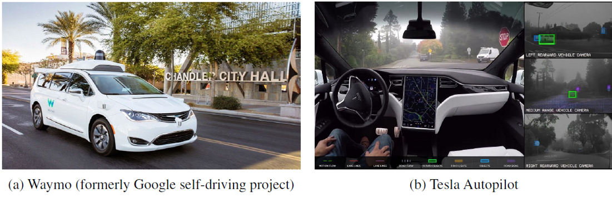
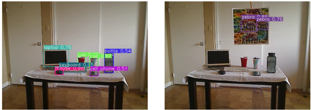
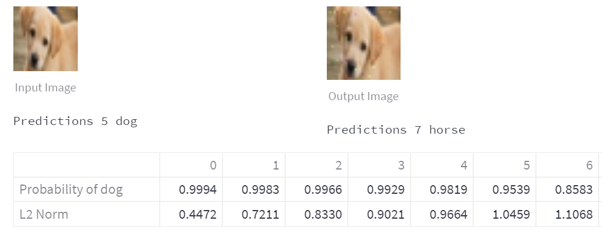
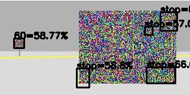
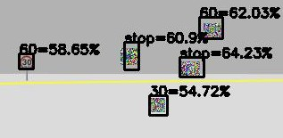

Adversarial Attacks against Deep Learning
Research Question: Is Deep Learning secure for Robots?
- Real-time White-box Attack (20ms)
- Project 1: Adversarial Filter
- Project 2: Adversarial Detection
- Distributed Black-box Attack (20s)
- Project 3: Adversarial Classification
Background
Is Deep Learning secure for Robots?
Intelligent Robots: Deep Learning in Robotics


Deep Learning for Autonomous Driving

Adversarial attacks against image classification

Adversarial attacks against object detection
Project 1: Adversarial Filter
Real-time White-box Attack
Project 2: Adversarial Detection
Real-time White-box Attack
Project 3: Adversarial Classification
Distributed Black-box Attack
Is Deep Learning secure for Robots?





Thanks